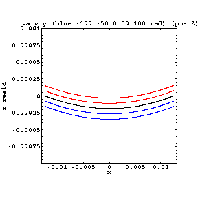
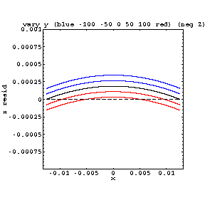
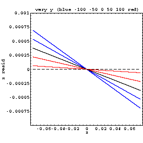

This alignment parameter (dely) has an effect which is completely independent of the bowing effect in the zres distributions.
|  |  |
| z res vs x, dely is varied (pos Z) (layer 1) | z res vs x, dely is varied (neg Z) (layer 1) |
|  | |
| z res vs z, dely is varied (layer 1) | |